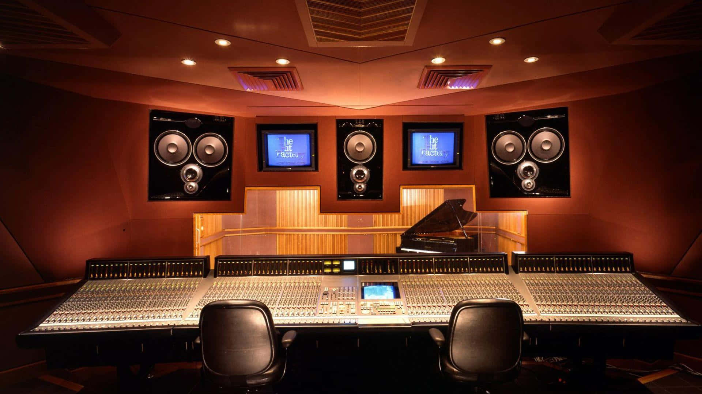
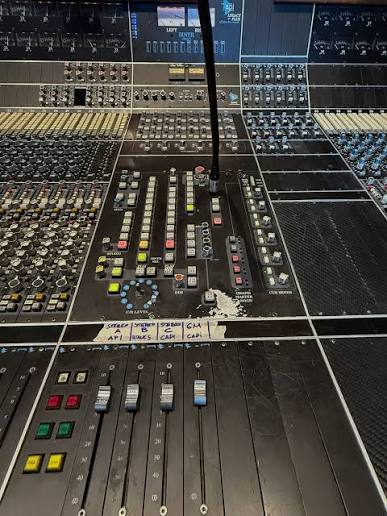
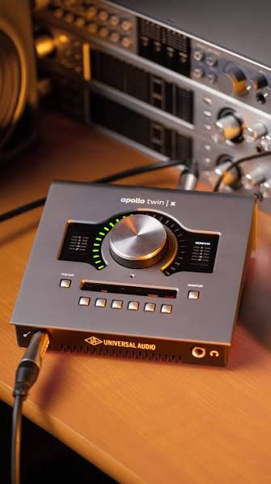
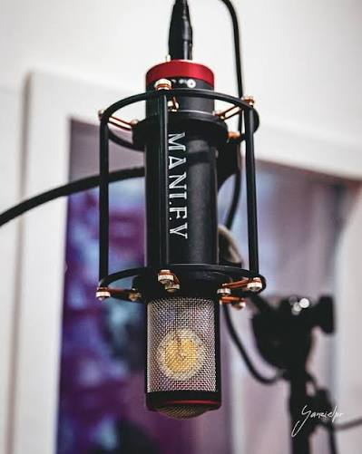

¿Por qué elegir producir en Home Studio?
En este estudio no hay excusa ni limitaciones para producir tu música con estándares de calidad internacional, porque para ser una banda grande, necesitas sonar grande. Por eso en Home Studio, nos comprometemos a respaldar a bandas y artistas en su viaje para revolucionar su carrera y catálogo musical. A continuación, te presentamos las razones por las que deberías elegir Home Studio para tu experiencia de producción.



Consola API 1971 Customizada
La pieza central de nuestro estudio es nuestra consola API 1971, customizada por Brent Averill, una verdadera joya en el mundo de la producción musical. Esta consola ofrece una calidad de sonido excepcional y una versatilidad que permite capturar cada matiz de su música con precisión y calidez.
Diseño Acústico Superior
Diseñado por los mejores ingenieros acústicos de Latinoamérica, Home Studio garantiza un entorno acústico óptimo para cualquier proyecto. Cada aspecto del diseño ha sido pensado para proporcionar una claridad y fidelidad de sonido que hacen que cada grabación brille junto a la versatilidad que proporcionan nuestro live room y dead room a la hora de experimentar distintas sonoridades para tu producción musical.Equipamiento de Vanguardia
Además de la consola API, Home Studio está equipado con una amplia gama de micrófonos, outboard gear y herramientas digitales de alta gama. Todo el equipo ha sido seleccionado para cumplir con los estándares internacionales y proporcionar la mejor calidad de producción posible.
Ambiente Potenciador, Creador y Transformador
Home Studio no es solo un lugar para trabajar, sino un epicentro de la música en Latinoamérica. Con una atmósfera especial e inigualable, este estudio envuelve a los artistas en una experiencia única, permitiéndoles concentrarse en su arte sin distracciones y donde la historia impulsa el futuro de la música.Nuestro estudio no solo cuenta con una rica historia de producciones revolucionarias, sino que también ofrece una experiencia excepcional al grabar con una consola API 1971, una pieza legendaria utilizada en Electric Lady, el estudio de Jimi Hendrix, y una de las pocas ediciones especiales de esta icónica marca americana. Aquí, cada detalle está diseñado para inspirar y potenciar el proceso creativo, haciendo a nuestro estudio el espacio perfecto para transformar tus ideas en sonidos memorables.
Profesionales Dedicados
Nuestro equipo de productores, ingenieros y técnicos está comprometido a proporcionar un servicio de primera clase. Trabajamos estrechamente con cada artista para asegurar que su visión se realice de la mejor manera posible, ofreciendo asesoramiento técnico y creativo en cada paso del proceso.
Profesionales Dedicados
Nuestro equipo de productores, ingenieros y técnicos está comprometido a proporcionar un servicio de primera clase. Trabajamos estrechamente con cada artista para asegurar que su visión se realice de la mejor manera posible, ofreciendo asesoramiento técnico y creativo en cada paso del proceso.
Privacidad y Atención Personalizada
En Home Studio, valoramos la privacidad y la exclusividad. Cada proyecto recibe una atención dedicada, asegurando que los artistas puedan trabajar en un entorno tranquilo y sin interrupciones.
Historial de Exitos de todos los tiempos
Home Studio es el escenario donde se gestan algunas de las obras más emblemáticas de la música argentina y latinoamericana. Nuestra reputación de calidad y profesionalismo nos precede, siendo el hogar de grabaciones históricas de bandas y artistas legendarios como Patricio Rey y sus Redonditos de Ricota, Sumo, Divididos, Catupecu Machu, Boom Boom Kid, Fun People, Los Fabulosos Cadillacs, Dread Mar I, Telepáticos, El Kuelgue, Los Abuelos de la Nada, Mancha de Rolando, Miguel Mateos – Zas, Los Piojos, Ratones Paranoicos, Andrés Calamaro, La Renga, GIT, Juanse, Los Enanitos Verdes, Sui Generis, Los Auténticos Decadentes, Charly García, Fito Páez, Soda Stereo, Rata Blanca, V8, Babasónicos, Cazzu, Echo, y muchísimos otros. Los artistas de todos los géneros que han trabajado con nosotros saben que pueden esperar nada menos que la excelencia, contribuyendo así a un legado musical que sigue resonando con fuerza en la industria y que permanecerá indeleble a todos los tiempos.
Estándares Internacionales
En Home Studio, trabajamos con estándares internacionales de calidad, asegurando que cada grabación cumpla con las expectativas de calidad global en un mundo cada vez más competitivo y saturado donde resulta central que tu música destaque.
La mejor relación precio producto
Home Studio redefine la relación precio-calidad en la producción musical. Con una consola API 1971 customizada por Brent Averill y un entorno acústico diseñado por los mejores ingenieros en la región, ofrecemos resultados de nivel internacional a un costo que es simplemente insuperable, garantizando que cada proyecto logre su máximo potencial sin exceder su presupuesto.
Beneficios e incentivos para acceder a producción de calidad
En Home Studio nos comprometemos a promover la producción de alta calidad ofreciendo beneficios exclusivos para nuestros clientes más dedicados. Cuantas más canciones produzcas con nosotros, mayores serán los incentivos que recibirás, desde descuentos especiales hasta acceso a servicios adicionales y exclusivos. Además, estos beneficios no se limitan solo al estudio; se extienden a todo el entorno creativo de Home Studio, abriendo puertas a oportunidades únicas dentro de nuestro universo y su comunidad. Home Studio no es solo un espacio de grabación, es una oportunidad para experimentar la producción musical con estándares internacional a precios asequibles en uno de los espacios epicentros de la música en Latinoamérica.